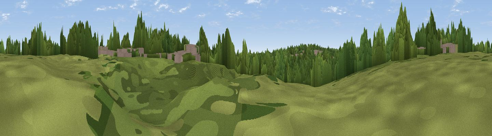

Bush Hill
#46166 in England · top 90% of its area beats it · near EnfieldWhere it is
The exact computed spot (TQ 32309 95417). Click the marker for map links.
The view, rendered

A 360° render of this exact spot computed from the terrain model, tree cover and land cover — summer colours, afternoon light, calibrated against photographs of famous viewpoints. Real trees, hedges and buildings will differ in detail.
The panorama
Grey silhouette: terrain skyline in each direction (720 bearings, Earth curvature and refraction included). Dashed green: skyline with trees (+15 m) and buildings (+8 m) as obstacles. Blue strip: how far the ground is visible on each bearing.
Where the view opens
Wedge length = distance to the farthest visible ground on that bearing (vegetation-aware). Rings at 10, 25 and 50 km.
What fills the view
59% woodland · 36% built-up · 4% grassland
Angular shares of the visible panorama (visual magnitude), not map area. Landscape diversity 0.36 (0–1 Shannon).
Key numbers
More beautiful places nearby
The staircase of upgrades: each row has a higher view potential than everything closer. Driving times are estimates from straight-line distance, calibrated against real road routing — check an actual route before setting out.
| Place | Direction | Drive | Score |
|---|---|---|---|
| Viewpoint near Enfield | S · 2 km | ~4 min | 12.9 |
| Viewpoint near Wood Green | SW · 3 km | ~8 min | 17.3 |
| Viewpoint near Sewardstonebury | ESE · 5 km | ~12 min | 18.1 |
| Yardley Hill | E · 6 km | ~12 min | 29.8 |
| Viewpoint near Wood Green | SSW · 6 km | ~13 min | 35.9 |
| Viewpoint near East Finchley | SSW · 9 km | ~17 min | 38.5 |
| Harrow on the Hill | WSW · 19 km | ~32 min | 42.3 |
| Jury Hill | ESE · 30 km | ~47 min | 48.5 |
51.64200, -0.08931 · source: osm peak · position refined by local search. Computed location — check access rights before visiting.